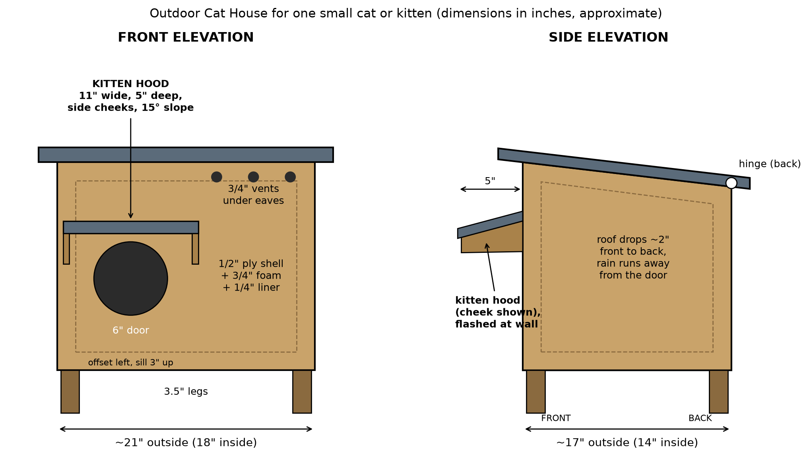

Outdoor Cat House
A snug, weatherproof winter shelter for one small cat or kitten
Every barnyard has a few small residents who don't get a stall of their own. This design gives one small cat or kitten a dry, draft-free, insulated hideout that is easy to build in a weekend from home-center materials. It's small on purpose: a kitten heats its house with its own body, so less air means a warmer cat.
Overview and key dimensions
| Interior (living space) | 18" W x 14" D x 14" H (at the low back; about 16" at the front) |
|---|---|
| Outside, approx. | 21" W x 17" D x about 22" H to the roof peak, including 3.5" legs |
| Occupancy | One small cat or kitten (two snuggly littermates at most) |
| Entrance | 6" round door, offset to one side, sill 3" above the inside floor |
| Kitten hood | 11" W x 5" D sloped awning over the door, with side cheeks, about 15° |
| Walls, floor, roof | 1/2" exterior plywood + 3/4" rigid foam + 1/4" liner |
| Roof | Single slope, front to back, hinged at the back, membrane or shingles on top |
| Weight | About 25-30 lb empty, so one person can carry it |
Diagram: front and side elevations

Why this size
Cats keep warm by trapping their own body heat. An 18 x 14 x 14 inch space is roomy enough for a kitten to turn around, stretch and curl up in straw, but small enough that its body warms the air inside within minutes. A bigger "cat mansion" feels generous but stays cold. If you need room for two or three cats, build two houses rather than one large one.
Weatherproof materials
- Shell: 1/2" exterior-grade plywood (ACX or similar). PVC trim board or cellular PVC sheet is a rot-proof upgrade if you don't mind the cost.
- Finish: exterior primer plus two coats of exterior latex paint, or a penetrating exterior sealant. Seal every edge, especially end grain and the bottom of the floor. Let it cure and air out for a few days so the fumes are gone before a cat moves in.
- Joints: exterior wood glue and coated or stainless exterior screws. Run a bead of exterior caulk along the outside corners and the roof line.
- Overhang: the roof overhangs about 2" at the front, 1.5" at the back and 1.5" at each side, so rain drips clear of the walls.
Insulation and bedding
- Line the walls, floor and roof underside with 3/4" rigid foam board (XPS or foil-faced polyiso), cut to fit snugly and taped at the seams.
- Cover all the foam with a 1/4" plywood or hardboard liner. Cats will happily shred bare foam, and it's not something they should chew.
- Bedding: loose straw, about 3-4" deep. Straw stays dry and lets a cat burrow into a warm nest. Never use blankets, towels or hay. They soak up moisture, then freeze, and turn the house into a cold, damp box.
- Optional warmth: a self-warming pet pad (Mylar-lined, no power) or a microwaveable heat disc. Follow the maker's heating instructions, never put anything hot straight on the cat, and keep corded electric pads out unless they are rated for outdoor use and the cord is chew-protected.
Raised floor
The house sits on four 3.5" 2x2 legs (or two pallet-style runners) so cold, wet ground never touches the floor. Air under the floor keeps it dry, and the floor itself is insulated too. On soft ground, set the legs on pavers so they don't sink or wick water.
Entrance: keep the small folks in and the big folks out
- The door is a 6" circle, about 5.5-6" across. That suits a cat and keeps out raccoons, most dogs and other larger visitors.
- It's offset to one side, so the cat's bed sits in the protected corner away from the opening and wind can't blow straight onto it.
- The sill is 3" above the inside floor, which holds the straw in and stops drifting snow and runoff from rolling inside.
- Optional flap: a clear, flexible vinyl flap (cut from a strip-door piece or heavy vinyl) cuts drafts. Pin it up for the first week or two until the cat is used to the door.
Kitten hood (door awning)
- A small hood over the door blocks blowing rain and snow and gives the kitten a dry spot to pause on the way in and out. Think of it as a tiny porch roof for very important tenants.
- Size: 11" wide by 5" deep (anything in the 10-12" wide, 4-6" deep range works). It sits about 1" above the top of the door and overhangs the opening by about 2.5" on each side.
- Shape: a 1/2" plywood top angled about 15° down and away from the wall, carried on two small cheek pieces. The cheeks are 5" deep, 2.5" tall at the wall and 1.25" at the tip, and they block sideways gusts.
- Weathering: seal it like the rest of the house, top it with the same membrane or shingle offcut as the roof, and run self-adhering flashing tape or a bead of exterior caulk where the hood meets the wall, so water can't track down behind it.
Ventilation
- Drill three 3/4" vent holes high on the front wall and three high on the back wall, just under the eaves, through both the plywood and the foam. Cover them inside with a scrap of window screen or 1/4" hardware cloth.
- Warm breath carries moisture, and moisture means frost. High vents let damp air escape without a draft at cat level. Don't add low vents.
Roof
- The roof is a single panel that slopes about 2" from front to back, so rain runs away from the door. It's hinged at the back with two exterior hinges and held closed with a hook-and-eye or barrel latch at the front, so you can lift it for cleaning and straw changes.
- Top it with peel-and-stick roll membrane, or with a few asphalt shingles over roofing felt. Wrap the membrane over the front and side edges by an inch. The underside gets foam and liner, cut to drop just inside the walls so the lid seals snugly.
Siting: location, location, location
- Turn the door away from the prevailing winter wind. In much of the US that means facing south or east, but check your own yard.
- Set it near shelter, such as a barn wall, under a porch or deck overhang, or beside a hedge. Keep it out of low spots where water collects.
- Keep it off the ground on its legs or on a couple of pavers, and somewhere quiet where people and dogs don't pass all day.
- In deep-snow areas, check the door and clear drifts after storms. The hood helps, but a big drift wins every time.
Materials list (estimated costs, USD)
| Item | Qty | Est. cost |
|---|---|---|
| 1/2" exterior plywood (ACX), 4' x 8' sheet | 1 | $50–65 |
| 1/4" plywood or hardboard liner, 4' x 4' panel | 1 | $15–22 |
| 3/4" rigid foam board (XPS or polyiso), 4' x 8' sheet | 1 | $18–28 |
| 2x2 lumber, 8 ft (legs and corner cleats) | 2 | $8–12 |
| Exterior screws, 1-1/4" coated, small box | 1 | $8–12 |
| Exterior wood glue | 1 bottle | $6–9 |
| Exterior primer, quart | 1 | $12–16 |
| Exterior latex paint, quart | 1 | $15–22 |
| Exterior caulk | 1 tube | $6–9 |
| Peel-and-stick roll membrane (roof + kitten hood), small roll | 1 | $20–30 |
| Self-adhering flashing tape, 2-4" (hood joint, edges) | 1 roll | $8–14 |
| Foil tape for foam seams | 1 roll | $7–10 |
| Exterior hinges (stainless or galvanized) | 2 | $8–14 |
| Hook-and-eye or barrel latch | 1 | $4–7 |
| Window screen or 1/4" hardware cloth scrap (vents) | 1 small piece | $4–8 |
| Clear flexible vinyl for door flap (optional) | 1 piece | $5–10 |
| Straw, small bale | 1 | $8–15 |
| Self-warming pet pad (optional) | 1 | $15–25 |
| Estimated total (everything) | $217–328 | |
| Without optional items | $197–293 |
Cost figures are rough estimates in US dollars from typical home-center pricing and will vary by store and region. Leftover plywood and foam from the full sheets can build a second house.
Cut list
| Part | Material | Qty | Size / notes |
|---|---|---|---|
| Front wall | 1/2" ply | 1 | 21" W x 17" H; 6" door hole centered 6" from the left edge and 7.5" up from the bottom edge |
| Back wall | 1/2" ply | 1 | 21" W x 15" H |
| Side walls | 1/2" ply | 2 | 16" W; 17" tall at the front edge tapering to 15" at the back |
| Floor | 1/2" ply | 1 | 20" x 16" (fits inside the walls on cleats) |
| Roof | 1/2" ply | 1 | 24" x 20" (gives 2" front and 1.5" side/back overhang) |
| Kitten hood top | 1/2" ply | 1 | 11" x 5.25", back edge beveled about 15° |
| Kitten hood cheeks | 1/2" ply | 2 | 5" deep; 2.5" tall at the wall, 1.25" at the tip |
| Legs | 2x2 | 4 | 3.5" long |
| Corner cleats | 2x2 | 4 | about 13" long (trim to fit inside the corners) |
| Floor cleats | 2x2 | 2 | 16" long |
| Foam | 3/4" foam | set | Floor 18" x 14"; front and back to fit; 2 sides to fit; roof underside about 18" x 14" |
| Liner | 1/4" ply | set | Same sizes as the foam pieces; cut the door hole through foam and liner after fitting |
Build steps
- Cut all the panels from the cut list. Mark the 6" door on the front wall (offset left, centered 7.5" up) and cut it with a hole saw or jigsaw. Sand every edge so nobody snags a whisker.
- Prime every face and edge before assembly, especially end grain, the floor's underside and all the kitten hood pieces. Let it dry.
- Glue and screw the 2x2 corner cleats inside the front and back walls, then fasten the side walls to them to make an open box.
- Screw the two floor cleats along the bottom inside the side walls, then glue and screw in the floor. Attach the four 3.5" legs at the corners, or screw the box onto two runners.
- Drill three 3/4" vents high on the front and back walls, just under the roof line, and staple screen or hardware cloth over them on the inside.
- Cut and glue the foam to the floor and walls. Tape the seams with foil tape, then cut the door and vent openings through the foam.
- Glue and pin the 1/4" liner over all the foam, and cut matching door and vent openings. Make sure there are no exposed foam edges for little claws.
- Build the kitten hood. Glue and screw the two cheeks under the hood top so the top tilts about 15° down and away from the wall. Fasten it to the front wall about 1" above the door, centered over it, screwing from inside through the wall into the cheeks.
- Seal the hood. Run flashing tape (or caulk) along the joint where the hood meets the wall, then cover the hood top with a piece of roof membrane, lapped up onto the wall above the flashing so water sheds outward.
- Glue foam and liner to the underside of the roof panel, sized to sit just inside the walls. Hinge the roof at the back, add the front latch, and apply the membrane or shingles to the top with the edges wrapped.
- Caulk the outside corners, then paint two coats of exterior paint (the hood too). Let it cure and air out for a few days.
- Hang the optional vinyl flap, add 3-4" of loose straw, set the house in its spot with the door away from the wind, and wait patiently. Cats move in on their own schedule.
Maintenance and cleaning
- Check the straw weekly in winter. Replace it whenever it's damp, matted or soiled, and fully at least once a month.
- Twice a year, lift the roof, empty everything, brush it out and wipe it with a mild, pet-safe cleaner. Let it dry fully before re-bedding.
- Each fall, check the paint, caulk, roof membrane and the hood flashing. Touch up bare wood and re-seal the hood joint if it has opened.
- Make sure the vents and door are clear of snow and ice after storms.
- Check for wasps or mice in late spring, before closing it up for summer.
- Never use blankets or hay, and never leave a hot heat disc in direct contact with the cat.
Happy building, and may your barnyard kitten stay warm, dry and smug all winter.